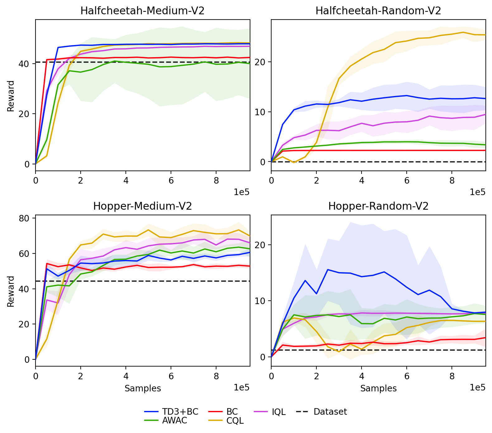
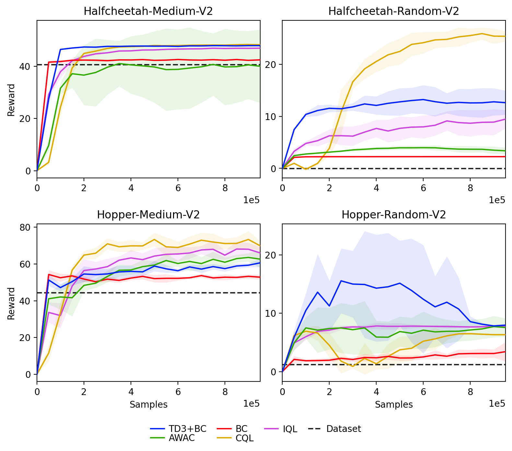
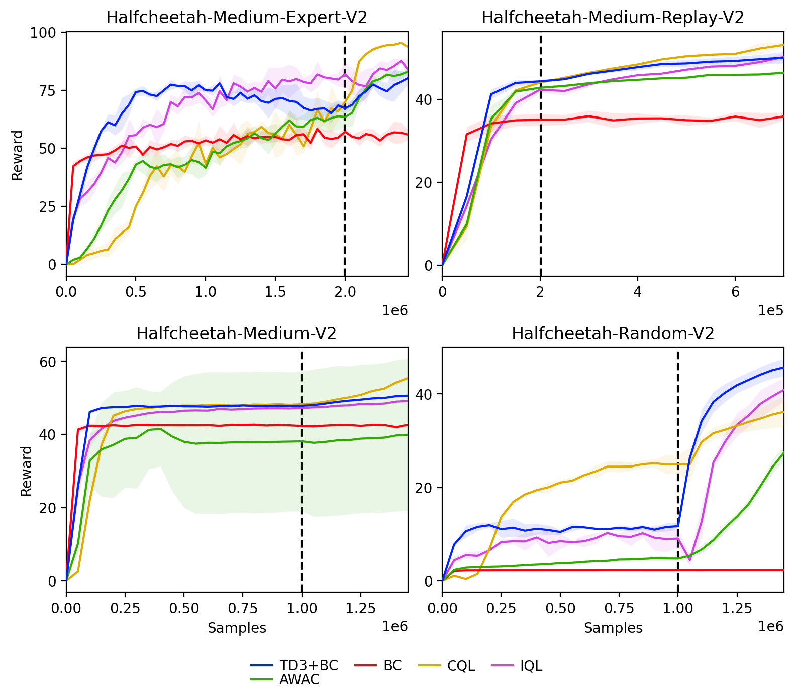
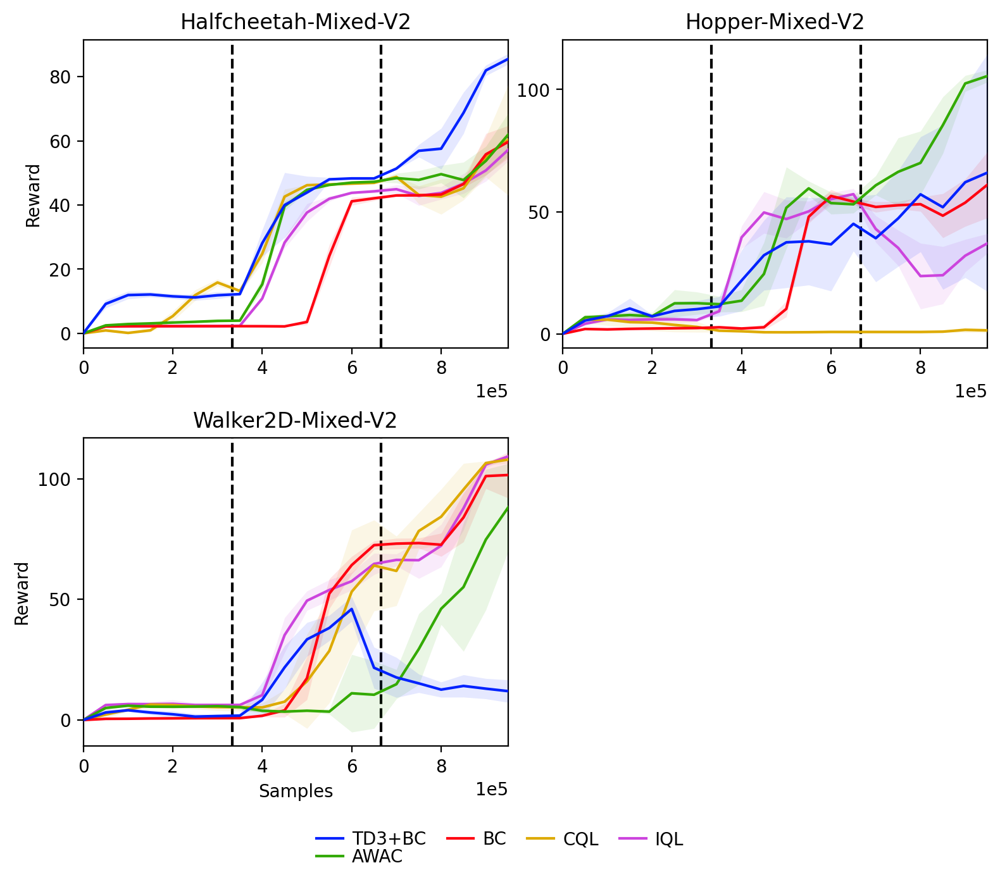

Standard
Sequentially add samples from the dataset

- Algorithms generally converge with < 50% of data and don't improve beyond that.
- Highlights that most of the tested algorithms are not very data-hungry.
Reinforcement learning (RL) has shown great promise with algorithms learning in environments with large state and action spaces purely from scalar reward signals. A crucial challenge for current deep RL algorithms is that they require a tremendous amount of environment interactions for learning. This can be infeasible in situations where such interactions are expensive; such as in robotics. Offline RL algorithms try to address this issue by bootstrapping the learning process from existing logged data without needing to interact with the environment from the very beginning.
While online RL algorithms are typically evaluated as a function of the number of environment interactions, there exists no single established protocol for evaluating offline RL this way. In this paper, we propose a sequential approach to evaluate offline RL algorithms as a function of the training set size and thus by their data efficiency.
Sequential evaluation provides valuable insights into the data efficiency of the learning process and the robustness of algorithms to distribution changes in the dataset while also harmonizing the visualization of the offline and online learning phases. Our approach is generally applicable and easy to implement. We compare several existing offline RL algorithms using this approach and present insights from a variety of tasks and offline datasets.
There is a lack of consensus in the offline RL community on evaluation protocols for these methods. The most widely used approach is to train for a fixed number of epochs on the offline dataset and report performance through the average return obtained over a number of episodes in the environment. We contend that there are a few issues with this approach.
Firstly, this approach does not provide much information about the sample efficiency of the algorithm since it is trained on all data at every epoch. This means that practitioners do not see how the algorithm can scale with the dataset size, or if it can achieve good performance even with small amounts of logged data. Furthermore, there can be distribution changes in the quality of the policy in the dataset, and evaluating as a function of epochs hides how algorithms react to these changes. Finally, there is a disconnection in the evaluation strategies of online and offline RL algorithms, which can make it difficult to compare algorithms realistically.
Instead of treating the dataset as a fixed entity, we propose that the portion of the dataset available to the agent change over time and that the agents' performance is evaluated as a function of the available data. This can be implemented by reusing any of the prevalent replay-buffer-based training schemes from online deep RL. But instead of extending the replay-buffer with sampled trajectories from the currently learned policy, we instead slowly insert prerecorded offline RL data. We alternate between adding new samples to the buffer and performing gradient updates using mini batches sampled from the buffer. The number of samples added to the buffer at a time is denoted by $\gamma$ and the number of gradient steps performed between each addition to the buffer is denoted by $K$.
Sequentially add samples from the dataset

After adding dataset, fixed budget of online interactions
Study effect of change in dataset generating policy
@inproceedings{sujit2022bridging,
title={Bridging the Gap Between Offline and Online Reinforcement Learning Evaluation Methodologies},
author={Shivakanth Sujit and Pedro Braga and Jorg Bornschein and Samira Ebrahimi Kahou},
booktitle={3rd Offline RL Workshop: Offline RL as a ''Launchpad''},
year={2022},
url={https://openreview.net/forum?id=lT4dOUtZYZ}
}